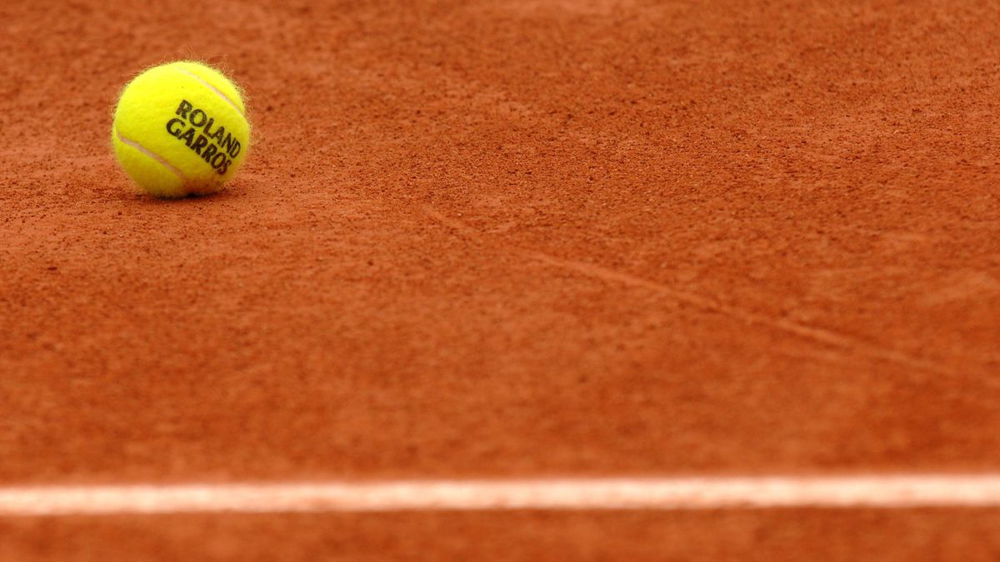
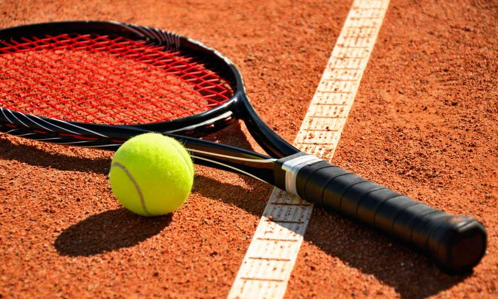
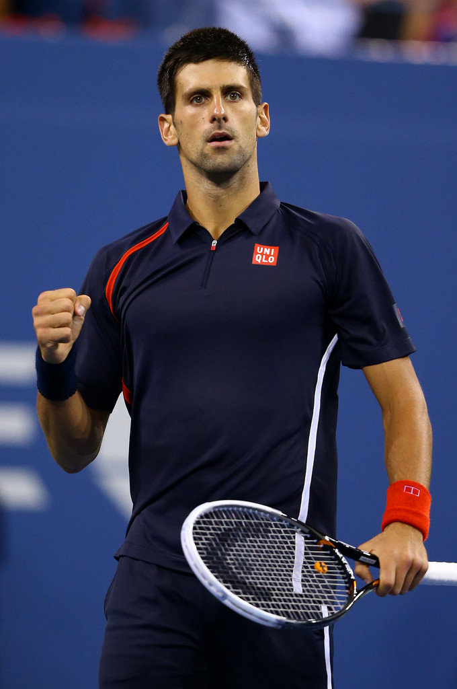
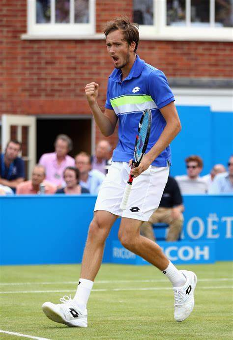
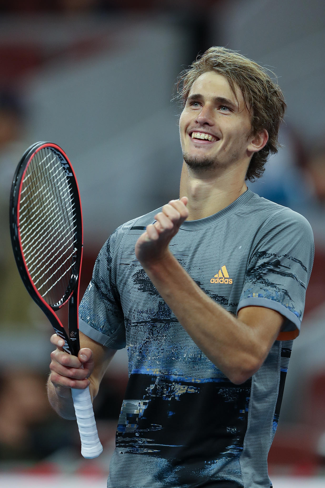

|

|
Top 10 classement ATP
| 1 |
Novak Djokovic |
| 2 |
Daniil Medvedev |
| 3 |
Alexander Zverev |
| 4 |
Stefanos Tsitsipas |
| 5 |
Andrey Rublev |
| 6 |
Rafael Nadal |
| 7 |
Matteo Berrettini |
| 8 |
Casper Ruud |
| 9 |
Hubert Hurkacz |
| 10 |
Jannik Sinner |
|

|
1.Novak Djokovic

En 2021
5 Titres: (Open d'Australie, Belgrade 2, Roland-Garros, Wimbledon, Rolex Paris Masters)
2.Daniil Medvedev

En 2021
4 Titres: (Marseille, Majorque, Open du Canada, US Open)
3.Alexander Zverev

En 2021
5 Titres: (Acapulco, Madrid, Cincinnati, Vienne, Masters (Turin))
Cliquer ici pour consulter les dernière actu tennis.
Revenir à la page d'accueuil